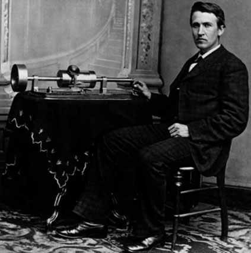

|
|
38 THOMAS EDISON 1847-1931

Penemu serba bisa Thomas Alva Edison lahir tahun 1847 di
kota Milan, Ohio, Amerika Serikat. Cuma tiga tahun dia
peroleh pendidikan formal, sesudah itu disepak keluar
sekolah karena si guru menganggap anak ini dungu luar
biasa.
Ciptaan pertamanya, perekam suara elektronik dibikinnya
tatkala umurnya dua puluh satu tahun. Hasil karyanya itu
tidak dijualnya. Sesudah itu dia menekuni pembikinan
peralatan yang diharapnya bisa laku terjual di pasar, tak
lama sesudah dia berhasil membikin perekam suara elektronik,
dia menemukan dan menyempurnakan mesin telegram yang secara
otomatis mencetak huruf, yang dijualnya seharga 40.000
dolar, suatu jumlah besar pada saat itu. Sehabis itu,
bagaikan antri dia menemukan hasil karya baru dan dalam
tempo singkat Edison bukan saja masyhur tetapi juga berduit.
Mungkin, penemuannya yang paling asli adalah mesin piringan
hitam yang dipatenkannya tahun 1877. Tetapi, lebih terkenal
di dunia dari itu adalah pengembangan bola lampu pijar yang
praktis tahun 1879.
Edison bukan orang pertama yang menciptakan sistem
penerangan listrik. Beberapa tahun sebelumnya lampu
bersinarkan arus listrik telah digunakan buat penerangan
lampu jalan di Paris. Tetapi, bola pijar Edison berikut
sistem pembagian tenaga listrik yang dikembangkannya
memungkinkan adanya penerangan listrik yang praktis untuk di
rumah. Tahun 1882, perusahaannya mulai memproduksi listrik
untuk rumah-rumah di New York, dan dalam tempo singkat sudah
tersebar ke seluruh dunia.
Dengan berdirinya perusahaan listrik pertama untuk
penerangan rumah-rumah, Edison berarti sudah meletakkan
dasar bagi perkembangan industri besar. Penggunaan tenaga
listrik bukan cuma buat penerangan tetapi untuk seluruh
aspek kebutuhan rumah tangga, mulai dari televisi hingga
mesin cuci. Lebih jauh lagi, kegunaan tenaga listrik lewat
distribusi jaringan-jaringan yang didirikan Edison dengan
sendirinya mendorong penggunaan listrik untuk sektor
industri.
Edison juga memberi sumbangan besar luar biasa buat
perkembangan kamera perfilman serta proyektor. Dia membuat
penyempurnaan penting pertilponan (karbon transmiternya
meningkatkan kejelasan pendengaran), penyempurnaan di bidang
telegram, dan mesin tik. Diantara penemuan lainnya antara
lain mesin dikte, mesin kopi dan tempat penyimpanan yang
digerakkan baterei. Boleh dibilang, Edison merancang lebih
dari 1000 penemuan, suatu jumlah yang betul-betul tak masuk
akal.
Satu sebab produktivitasnya amat mengherankan adalah
karena pada awal-awal kariernya dia membangun sebuah
laboratorium penyelidikan di Menlo Park, New Jersey. Di
situlah dia menghimpun kelompok pembuat yang berkemampuan
membantunya. Ini adalah cikal bakal sebuah laboratorium
penyelidikan yang kemudian ditiru oleh begitu banyak
industri. Laboratorium pemula Edison yang modern, suatu
pusat penyelidikan yang berperalatan lengkap di mana begitu
banyak orang bekerja bersama merupakan suatu team, adalah
pula hasil karyanya yang penting, meskipun tentu saja
sesuatu yang tidak bisa dia patenkan.
Edison bukanlah seorang penemu semata; dia juga terlibat
dalam pembikinan dan mengorganisir pelbagai perusahaan
industri. Yang paling penting diantaranya akhirnya menjelma
menjadi General Electric Company.
Meski secara pembawaan dia bukan seorang ilmuwan murni,
Edison membikin satu penemuan ilmiah. Di tahun 1882 dia
menemukan bahwa dalam keadaan mendekati hampa udara, arus
listrik dapat dialirkan diantara dua kawat yang tidak
bersentuhan satu sama lain. Fenomena ini --disebut penemuan
Edison-- bukan sekedar punya maksud teoritis yang penting,
tetapi juga punya arti penggunaan praktis yang bermakna. Ini
menuntun ke arah perkembangan tabung hampa udara dan
peletakan dasar industri elektronik.
Hampir sepenuh masa hidupnya, Edison menderita
pendengaran lemah. Tetapi, meski begitu, dia lebih dari
sekedar dapat mengatasi hambatan itu dengan kerja kerasnya
yang mengagumkan. Edison kawin dua kali (istri pertamanya
mati muda), punya tiga anak dari masing-masing istri. Dia
meninggal tahun 1931 di West Orange, New Jersey.
Tak ada perselisihan paham mengenai bakat Edison. Tiap
orang sepakat bahwa dialah penemu besar yang genius yang
pernah hidup. Barisan penemuan-penemuannya yang amat
bermanfaat dianggap menggemparkan dan membikin dengkul
menggigil, meskipun mungkin saja sebagiannya dikembangkan
oleh orang lain dalam tempo tiga puluh tahun. Namun, bila
kita perhatikan penemuan-penemuan pribadinya, akan tampak
oleh kita bahwa tak satu pun daripadanya punya arti penting
yang bersifat menentukan. Misalnya bola pijar, walaupun
digunakan secara luas, bukanlah barang yang tak tergantikan
dalam dunia modern. Fakta menunjukkan, penerangan yang
berasal dari radiasi dan keluar terpencar dalam bentuk
cahaya, yang bekerja atas dasar prinsip-prinsip ilmiah yang
sepenuhnya berbeda, juga digunakan orang secara luas, dan
dalam kehidupan kita sehari-hari tidaklah ada bedanya
apabila kita tidak menggunakan bola lampu pijar samasekali.
Sesungguhnya, sebelum penerangan listrik digunakan, lilin,
lampu minyak, dan lampu gas sudah secara umum dipandang
sebagai kadar penerangan yang memuaskan.
Alat piringan hitam memang suatu penemuan cerdik, tetapi
tak seorang pun menganggap alat itu sudah mampu mengubah
kehidupan kita sehari-hari seperti halnya peranan yang
disuguhkan radio, televisi atau tilpon. Lebih jauh dari itu,
dalam tahun-tahun belakangan ini, telah dapat diciptakan
alat perekam suara dengan metode yang sama sekali berbeda,
seperti misalnya pita magnetik kaset. Dan andaikata tidak
ada mesin piringan hitam, rasanya tidak apa-apa. Banyak
paten-paten Edison yang berkaitan dengan penyempurnaan
alat-alat, sebetulnya sudah ditemukan oleh orang lain lebih
dulu, bahkan sudah dalam bentuk yang sudah bisa
dimanfaatkan. Penyempurnaan-penyempurnaan ini --meski banyak
menolong-- tak bisa dianggap sebagai suatu arti penting
dalam rangkaian gerakan sejarah secara umum.
Tetapi, kendati tak satu pun hasil penemuan Edison
memiliki arti penting yang menggemparkan, berguna juga untuk
diingat bahwa dia tidak cuma menciptakan satu alat, tetapi
lebih dari seribu. Atas dasar pertimbangan inilah saya
menempatkan Edison lebih tinggi ketimbang penemu termasyhur
seperti Guglielmo Marconi dan Alexander Graham Bell.
Situs Web
- http://memory.loc.gov/ammem/edhtml/edhome.html
- http://www.virtualology.com/THOMASALVAEDISON.ORG/
|